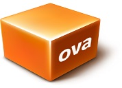

Continue to my blogs
Jonathan's Windows blog
An intriguing puzzle that will keep you awake at night

I have a Macromedia Patent portfilio and several complete software appliances. Vitrual Box Appliances on a NAT downstream network we offer with your valid key and or licence are AT&T System V, Plan 9, IBM XENIX, Intel UNIX, SCO UNIXWare, SGI IRIX, FreeBSD With Common Desktop Environment, OpenBSD, NetBSD, OS/2, NeXT OpenStep Enterprise, Apple macOS, MS-DOS and Windows 1.0-2012 R2. My BMI Ambient catalog was and will be licenced.
The Virtual Box Appliances can be licenced as well as the Macromedia Patent portfolio
Virtual Box is a powerful x86 and AMD64/Intel64 virtualization product for enterprise as well as home use. Not only is VirtualBox an extremely feature rich, high performance product for enterprise customers, it is also the only professional solution that is freely available as Open Source Software under the terms of the GNU General Public License (GPL) version 3.

Open Virtualization Format (OVF) is an open standard for packaging and distributing virtual appliances or, more generally, software to be run in virtual machines